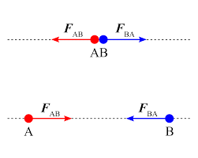
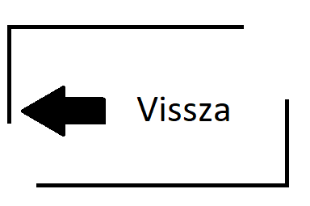

A törvény következménye, hogy a kalapács ugyanakkora erővel hat a szögre, mint a szög
a kalapácsra (mivel azonban a kalapács tömege lényegesen nagyobb,
a második törvény
értelmében a gyorsulása arányosan kisebb lesz), hasonlóképp egy bolygó
ugyanakkora
erővel vonzza a Napot, mint a Nap a bolygót (de a Nap tömege sokszorosa a bolygóénak,
a jelentkező gyorsulás mértéke tehát eltér)
Newton III.törvénye:
két test kölcsönhatásakor mindkét test erővel hat a másikra, ezek az erők egyenlő nagyságúak és ellentétes irányúak. A két erőt erőnek és ellenerőnek nevezzük.
|   |